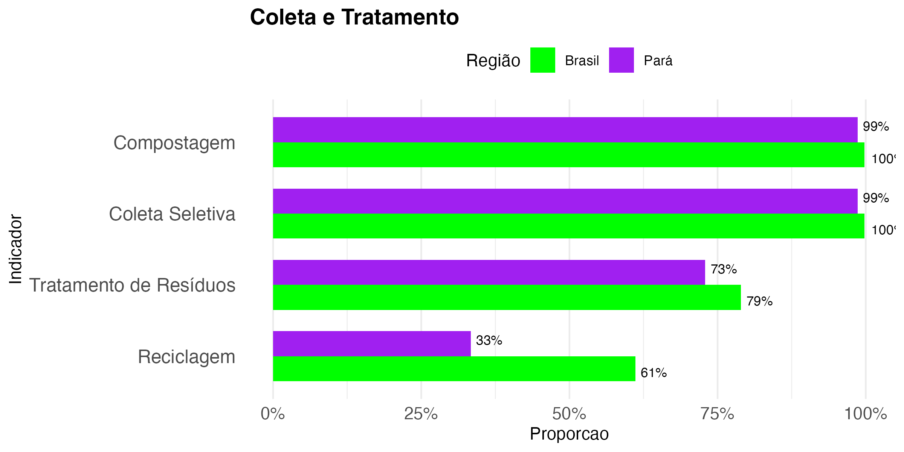
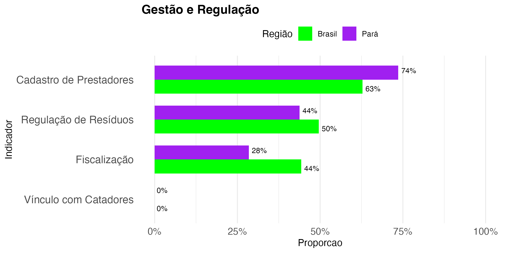
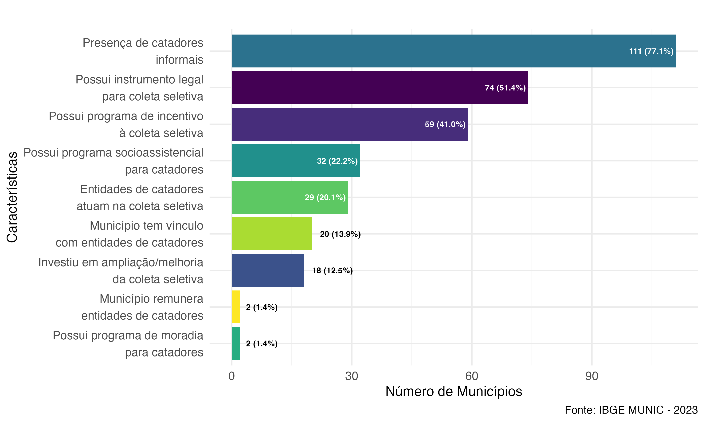
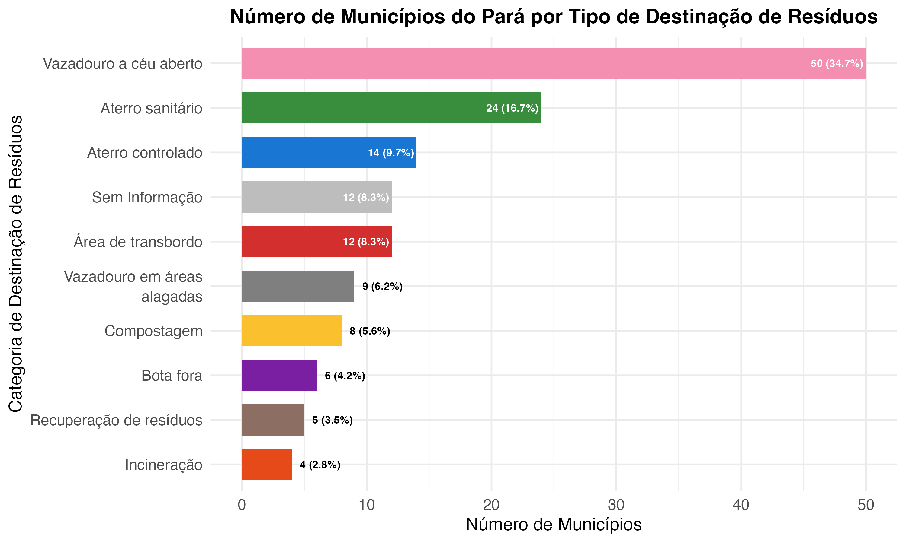
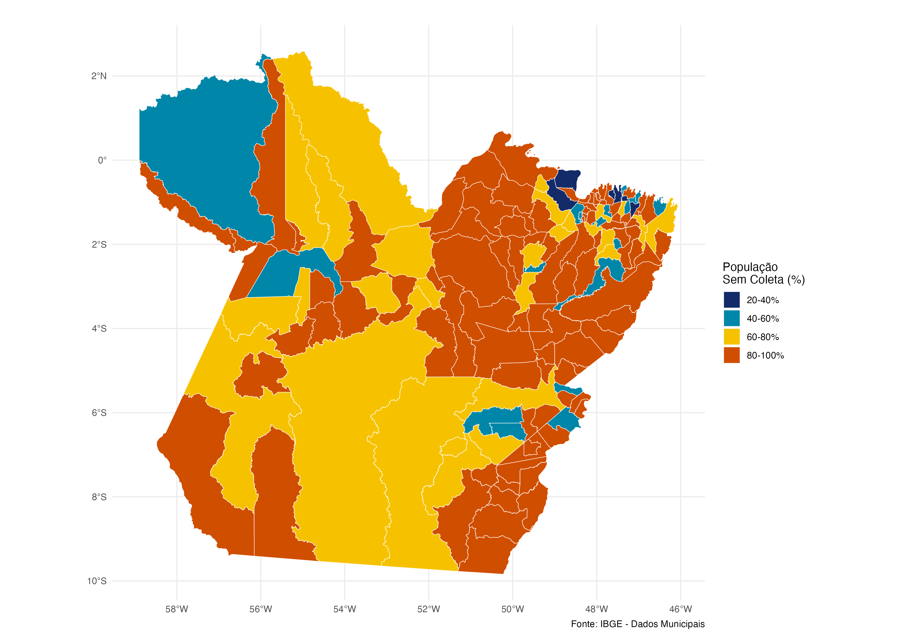

Introdução
A gestão de resíduos sólidos no Pará representa um dos maiores desafios ambientais e sociais da atualidade. A precariedade da infraestrutura de coleta, tratamento e destinação final do lixo compromete a qualidade de vida e agrava os impactos ambientais. Este post apresenta uma análise baseada em dados do IBGE/MUNIC 2023, destacando indicadores municipais comparados à média nacional, com foco em:
- Coleta e tratamento
- Destinação dos resíduos
- Participação e educação ambiental
- Regulação e fiscalização
- Cobertura populacional
Coleta e Tratamento

Apesar de indicadores elevados em compostagem e coleta seletiva, com 99% dos municípios paraenses declarando a prática, a reciclagem efetiva ocorre em apenas 33% deles, contra 61% na média nacional. Já o tratamento de resíduos atinge 73% no Pará, ainda abaixo do Brasil (79%).
Regulação e Gestão

Em termos de gestão, o Pará apresenta:
- 74% dos municípios com cadastro de prestadores
- 44% com fiscalização ativa
- Apenas 0% com vínculo direto com catadores
Esse dado preocupa, pois evidencia a invisibilidade das organizações de catadores, apesar de sua relevância na cadeia de reciclagem.
Presença de Catadores e Programas Municipais

A maioria dos municípios possui catadores informais, mas:
- Apenas 20,1% têm vínculo institucional
- Só 12,5% investiram em melhorias da coleta seletiva
- Praticamente inexistem programas de moradia ou remuneração a catadores
Destinação dos Resíduos

A destinação dos resíduos no Pará ainda é predominantemente inadequada:
- 50 municípios usam vazadouros a céu aberto
- Apenas 24 utilizam aterros sanitários
- Destinações como áreas alagadas, bota fora e incineração ainda são registradas
População sem Coleta

O mapa acima mostra que a maior parte do território paraense tem mais de 60% da população sem cobertura de coleta de resíduos. Em muitas regiões, esse número ultrapassa 80% — evidenciando a urgência de investimentos em infraestrutura e logística.
Conclusão
Os dados apontam um cenário crítico de exclusão ambiental no estado do Pará, marcado por:
- Cobertura precária da coleta domiciliar
- Predomínio de lixões
- Baixo apoio institucional aos catadores
- Déficit em educação e fiscalização ambiental
A superação desses desafios exige fortalecimento das políticas públicas, ampliação da infraestrutura de saneamento, e integração dos catadores e da sociedade civil nas estratégias de gestão de resíduos sólidos.
Este post integra uma série sobre sustentabilidade e justiça ambiental na Amazônia. Para mais análises, veja a lista completa de posts.